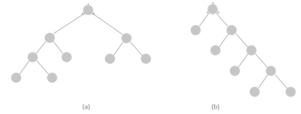

En un árbol binario T. se dice que un vértice Vi está en el nivel li. Si la distancia de la raíz Vr es igual a li. Es decir, d (Vr, Vi)) = li

Fig 2
Fig 2: en esta figura, se muestra un árbol binario T con 9 vértices y 3 niveles 1, 2, 3; el número de vértices en cada nivel es 2, 4 y 2 respectivamente. (La raíz del árbol se encuentra en el nivel 0).
En muchas aplicaciones de los arboles binarios es importante determinar el máximo o el mínimo números de niveles que puada tener un árbol binario T con n vértice. En la figura 3 se muestran dos árboles binarios con 9 vértices.
Fig 3
Con mínimo número de niveles fig. 3 (a) (en este caso 3) y máximo número de niveles fig. 3 (b) (en este case 4).
El máximo nivel, lmax de un árbol binario T se llama la ALTURA del árbol. Así, en el árbol de la figure 3 (a) y 3 (b) se tiene que lmax = 3 y lmax = 4 respectivamente.
Para un arbola binario T con n vértices se tiene que la MÁXIMA ALTURA
También se tiene que en un árbol binario T con n vértices. LA MÍNIMA ALTURA𝑚𝑖𝑛𝐿𝑚𝑎𝑥 = (log 2 (n + 1) – 1) (donde [x] significa el menor entero mayor o igual a x.). Recordando que [X] = k si y solo si k - 1 < x ≤ k. podemos demostrar la igualdad. En efecto; para n impar se tiene:
- Si minlmax = 1 entonces n=3; n = 21 + 1
- Si minlmax = 2 entonces n=5 o n = 7; 5 ≤ n ≤ 7; n = 22 + 1 ≤ n ≤ 22+1 - 1
- Si minlmax = 3 entonces n=9 o n = 15; 9 ≤ n ≤ 15; n = 23 + 1 ≤ n ≤ 23+1 - 1
- Si minLmax = k, entonces 2k + 1 ≤ n ≤ 2k+1 - 1
Entonces:
2k + 2 ≤ n + 1 ≤ 2k+1
2k < n + 1 ≤ 2k+1 tomando log2 se tiene
k < log2 (n + 1) ≤ k +1
k – 1 < log2 (n + 1) – 1 ≤ k
k = [log2 (n + 1) - 1]
Hemos demostrado que si minLmax = K se tiene que k = (log2 (n + 1) – 1) lo cual significa minLmax = (log2 (n + 1) - 1)